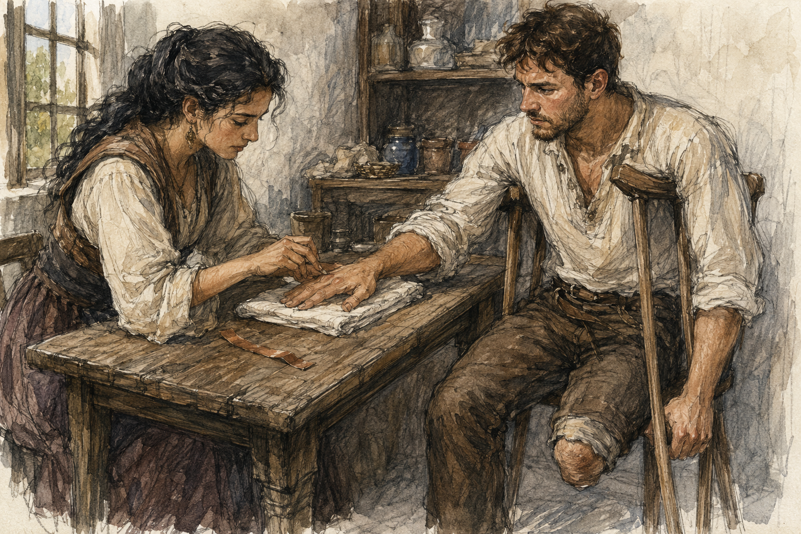

Hessa drew a black dot on my hand.
Not the thumb.
This felt personal.
“Charcoal?”
“Yes.”
“You could have warned me.”
“Why?”
“I would have washed better.”
“Your hand is clean.”
“That is not the same thing.”

The dot sat on the back of my right hand, just below the knuckle of the little finger.
Small.
Round enough.
Not precise.
I looked at it.
Hessa took my wrist and turned the hand palm-down on the folded towel.
“Leave it.”
“I am leaving it.”
“You are staring at it.”
“That is not movement.”
“It is with you.”
Everyone in Carrow had apparently formed a conspiracy around this phrase.
I looked up.
Two days since shaping.
One day since the no-magic day.
No thumb tingling.
No pain.
No weakness.
No cold.
No grip trouble.
Yesterday's courier route had given me ordinary hand warmth and palm pressure. Gone by evening.
Residual limb baseline.
Right calf ordinary.
Everything boring.
Excellent.
Hessa had examined all of it anyway.
Then she had drawn the dot.
I said, “Why there?”
“Because it is not your thumb.”
“I noticed.”
“And because I want a small target that does not require you to rotate the wrist to look at it once your hand is down.”
“You think I moved because I was aiming visually.”
“I think movement was one thing that happened.”
“Not necessarily cause.”
“Good.”
“You're training me.”
“No.”
“You just praised the distinction.”
“That is not training.”
“It feels like training.”
“Greg.”
“Fine.”
The straight copper strip lay on the table.
No curved one.
A shallow ceramic dish sat beside it.
Empty.
I looked at the dish.
“What is that?”
“A dish.”
“Useful.”
“Thank you.”
“What is it for?”
“Nothing yet.”
I hated nothing yet.
It had become a whole category of threat.
Hessa sat across from me.
“Today's test is one attempt.”
I stopped joking.
“One.”
“Yes.”
“Even if nothing happens?”
“Yes.”
“Even if I fail immediately?”
“Yes.”
“Even if I succeed?”
“Yes.”
That last one mattered.
I nodded.
“Instruction?”
“Minimal draw.”
“Yes.”
“Hold stable.”
“Yes.”
“Then make one deliberate alteration toward the marked point.”
“Into the hand?”
“Toward the marked point.”
“How localized?”
“Smaller than the whole hand.”
“That is generous.”
“It is deliberately less precise than the thumb instruction.”
I thought about that.
“You changed difficulty.”
“I changed the question.”
“Which is?”
“Whether you can make a deliberate unfamiliar alteration toward a new intact-side target without immediately falling into the same broader pattern we saw before.”
There.
Clean.
Not whether I could make perfect finger magic.
Not whether Barrier was broken.
Not whether my left leg had magical ghosts.
One question.
“Why less precise?”
“Because if you fail a harder task twice in two different ways, I learn less than you think.”
“That sounds wrong.”
“It isn't.”
“It feels wrong.”
“That is allowed.”
“What counts as failure?”
“I am not giving you a score.”
“What counts as success?”
“I am not giving you a score.”
“Hessa.”
She pointed at my hand.
“You attempt exactly one deliberate change toward that point. I observe. You report. Then we stop.”
“Can I stop first?”
“Yes.”
“If I feel Barrier?”
“Stop.”
“If the wrist rotates?”
“Stop.”
“If the thumb tingles?”
“Stop.”
“If anything hurts?”
“Stop.”
“If I think something is wrong?”
“Stop.”
“If I become spiritually offended by the dot?”
“Continue.”
Unfair.
I breathed.
Not mana.
Just breathing.
I wanted this too much.
That was obvious.
My heart was faster.
Right hand warm against the towel.
Black dot near little-finger knuckle.
I had never trained a spell around that location.
As far as I remembered.
Memory was not perfect.
But no immediate pattern came with it.
Good.
Hessa lifted the copper strip.
“Ready?”
“Yes.”
“Draw.”
I drew.
Mana arrived.
Small.
Familiar enough now that the arrival itself no longer felt like crossing a cliff every time.
Still supervised.
Still bounded.
Chest.
Shoulders.
Arms.
Right side.
Left thigh.
Knee.
Nothing unusual below.
Ordinary phantom foot.
Right hand quiet.
“Stable?”
“Yes.”
“Do not look at the mark.”
I almost looked.
Did not.
“Now. One alteration. Toward the mark. Small.”
I reached.
Not with the hand.
That distinction was suddenly difficult.
The first instinct was movement.
Not Barrier exactly.
Something more general.
Move hand toward target.
Body solves physical instruction physically.
I held still.
Mana was not a liquid.
Except when it was useful to think of it like one.
Not useful now.
I tried again.
Not more draw.
Not more force.
Just change where the existing small amount felt gathered.
Toward the outside edge of the hand.
Nothing.
Then something.
A pressure?
No.
Attention?
Maybe.
Mana shifted.
Tiny.
Not to the dot.
Near it.
Or I thought near it.
The back of my hand felt denser in a patch perhaps two fingers wide.
No wrist rotation.
No forearm tightening.
No palm spread.
No Barrier.
My pulse jumped.
I stopped before excitement changed anything.
“Release,” Hessa said.
I released.
Gone.
My hand remained still.
The black dot remained offensively ordinary.
I looked at Hessa.
She was looking at the copper.
Then my hand.
Then me.
“Well?”
“Report.”
Of course.
“Draw stable.”
“Yes.”
“I attempted to alter toward the marked point.”
“Yes.”
“First attempt produced nothing I could distinguish.”
“Continue.”
“I stopped myself from physically moving the hand.”
Her eyes changed slightly.
“Continue.”
“Second mental attempt.”
“Do not call it mental.”
“What?”
“You made a magical attempt while holding your hand still. That is enough.”
“Fine. Second attempt within the same shaping attempt.”
“Yes.”
“I felt a small localized change on the outer back of the hand.”
“How small?”
“Approximately two fingers wide.”
“Centered where?”
I looked.
Now allowed.
The black dot.
I touched nothing.
“Maybe half an inch inward from the mark.”
“Maybe?”
“Yes.”
“Thumb?”
“Nothing.”
“Palm?”
“Nothing broad.”
“Wrist?”
“No rotation. No urge.”
“Forearm?”
“No engagement I noticed.”
“Barrier?”
“No.”
“Pain?”
“No.”
“Tingling?”
“No.”
“Heat?”
“Normal hand warmth.”
“Cold?”
“No.”
“Numbness?”
“No.”
“Below-knee sensation?”
“Ordinary phantom foot only.”
She put the copper down.
I waited.
She wrote.
I waited harder.
“You are enjoying this,” I said.
“No.”
“You could say one sentence.”
“I am writing several.”
“Out loud.”
“No.”
“Hessa.”
She finished.
Then looked at me.
“I observed a localized change.”
My entire body went still.
“Where?”
“Outer right hand.”
“How localized?”
“More localized than the prior palm-and-wrist redistribution.”
“Did it move toward the mark?”
“Yes.”
“How close?”
“I am not measuring distance that precisely.”
“But yes.”
“Yes.”
“Copper?”
“Responded.”
“To the alteration?”
“Yes.”
“Wrist?”
“Stayed still.”
“Yes.”
“Forearm?”
“No obvious engagement.”
“Barrier pattern?”
“I did not observe the same familiar setup.”
There.
I smiled.
She raised a finger.
“No.”
“I am not doing anything.”
“You are turning this into a conclusion.”
“I made the intended change.”
“You made a change toward the intended area.”
“That is success.”
“It is one successful-looking response to one narrow instruction.”
“That is a very long way to say success.”
“It is exactly as long as necessary.”
I laughed.
Could not help it.
Hessa did not stop me.
That was suspicious.
“I did it.”
“You did something closer to what I asked.”
“Hessa.”
“Yes.”
“Fuck you.”
“Good. Language remains intact.”
I leaned back.
Bad chair.
Best chair in Carrow.
Maybe.
No.
Still terrible.
“What does it mean?”
“One unfamiliar intact-side target did not immediately produce the same broad hand-and-wrist pattern.”
“Old Barrier pattern not inevitable.”
“Not established as inevitable.”
“That is what I said.”
“No. You made it stronger.”
“Fine.”
“One attempt does not tell us whether the prior pattern was Barrier, whether it was automatic, whether it appears only with some instructions, whether today's change would repeat, or whether you can do anything more useful than make a small patch of your hand magically different for a moment.”
“It was magically different.”
“Subjectively and by my observation, yes.”
“And copper.”
“And copper.”
I grinned again.
She sighed.
“Your standards are very low today.”
“My standards have adapted to circumstance.”
“That sounds dangerous.”
“Probably.”
She took my right hand.
Examined.
Thumb.
Back of hand.
Wrist.
Grip.
Fingers.
Nothing.
Then she unfolded the towel and shook it once.
A little charcoal dust fell.
“That is the dish.”
I stared.
The ceramic dish.
She put the used charcoal nub into it.
“That is what it was for?”
“Yes.”
“You let me speculate.”
“You speculated without permission.”
“That is how speculation works.”
“Exactly.”
Cruel woman.
“What now?”
“Nothing.”
“No waiting?”
“Waiting.”
“Here?”
“For a few minutes.”
“Then?”
“Then you leave.”
“No second target?”
“No.”
“No repeat?”
“No.”
“Because one attempt.”
“Yes.”
“Even though it went well.”
“Especially because you are excited.”
“That is not medical.”
“It is operational.”
Fair.
I looked at the mark on my hand.
“Can I wash this off?”
“After we finish observing.”
“Why?”
“Because washing involves using the hand.”
“I have used the hand before.”
“Greg.”
“Fine.”
We waited.
No tingling.
No pain.
No weakness.
No cold.
No strange patch.
Nothing.
The child from the other day was not in the outer room.
Someone else was.
Low voice.
Nerin moving things.
Street noise.
Carrow continued.
I looked at the wall crack.
Still there.
Probably not growing.
Not my problem.
Hessa said, “Move fingers.”
I did.
Normal.
“Grip.”
Normal.
“Wrist.”
Normal.
“Stand.”
Both crutches.
Right hand to grip.
Up.
No tingling.
“Walk.”
Door.
Back.
No tingling.
“Again?”
“No.”
I sat.
“You're done.”
“That was fast.”
“It was not.”
“It felt fast.”
“You spent most of it arguing.”
“That does not count.”
“It counts to me.”
I looked at my hand again.
“Can I tell people I shaped successfully?”
“No.”
I stared.
She stared back.
“What can I say?”
“You completed one supervised attempt in which you made a small localized alteration toward the target without reproducing the same broad pattern from the first attempt.”
“That is unusable in conversation.”
“Then say less.”
“I shaped.”
“You altered.”
“We are back here.”
“Yes.”
“Did I shape mana?”
Hessa considered.
This time longer than I expected.
“Yes.”
The word hit harder than it should have.
She immediately continued.
“Once, in a small supervised test, without a spell.”
Still.
Yes.
I swallowed.
Not dramatic.
Just body.
Nineteen.
Magic had mattered before I died.
Magic mattered now.
Different body.
Same appetite.
Maybe.
I looked at her.
“Say it again.”
“No.”
“Cruel.”
“Yes.”
“So shaping clearance?”
“No.”
“Obviously.”
“Good.”
“Can I draw independently?”
“No.”
“Can I practice the hand target?”
“No.”
“Can I mentally rehearse it?”
“Do not deliberately rehearse the magical sequence.”
“Can I think about what happened?”
“Yes.”
“Generous.”
“Write it in prose.”
“No table.”
“No table.”
“Could I make one later?”
“No.”
“You cannot prohibit future tables forever.”
“I can try.”
I laughed.
Then the harder question arrived.
“Does this change what you think about casting?”
Hessa leaned against the table.
“A little.”
My chest tightened.
Not magic.
“What direction?”
“It makes me somewhat more confident that deliberate shaping may still be possible without every attempt immediately falling into an old trained pattern.”
“May still be possible.”
“Yes.”
“That is terrible optimism.”
“It is the amount I have.”
“Does it make you think I can cast?”
“It gives me one more reason not to conclude that you cannot.”
That was careful enough to hurt.
Also enough.
“Still don't know.”
“Still don't know.”
I nodded.
“What next?”
“Tomorrow no magic.”
I groaned.
“Again?”
“Yes.”
“Why?”
“Because you shaped today.”
“Successfully.”
“Do not make me regret the word.”
“Fine.”
“No recurrence of tingling so far. I want another ordinary day.”
“Then?”
“Come back the following day.”
“For another target?”
“Assessment.”
“Possible target?”
“Maybe.”
“Hessa.”
“You survived the word before.”
“Barely.”
“What about Pessa?”
“Ask Pessa if you want movement work and your body remains at baseline.”
“Any objection because of shaping?”
“Not medically from what I see now. If hand symptoms return, tell me and use judgment before loading it heavily.”
“Use judgment again.”
“Yes.”
“You are degrading.”
“I am adapting to circumstance.”
I stared.
She smiled.
My own sentence.
Theft.
“I hate you.”
“No.”
“Professionally.”
“Still no.”
I stood.
At the door I stopped.
“Right hand only still?”
“For shaping tests?”
“Yes.”
“For now.”
“Left remains not yet.”
“Yes.”
“Because you don't want the missing-side question.”
“Correct.”
Not fear.
Not hidden knowledge.
Just scope.
Good.
“Can you wash the dot off?”
“There's a basin.”
I went to it.
Water.
Soap.
Charcoal faded.
I noticed the hand moving.
Did not turn it into a test.
Mostly.
When I came back, Hessa was writing.
“Gone.”
“I can see.”
“Any significance?”
“No.”
“Excellent.”
I left.
Outside, I wanted to tell someone.
Immediately.
This was not a subtle desire.
Jorren first.
No.
He would say I succeeded at hand failure.
Alden would ask twenty questions and then try to invent an audience.
Lyssa.
That thought arrived differently.
Not because she would understand the magical mechanics better.
She would not.
Because I wanted her to know.
Simple.
I started toward where she worked.
Then stopped.
Independent schedules.
She might be busy.
That did not mean I could not go.
It meant I could not expect availability.
Fine.
I went.
She was busy.
Of course.
I saw her through the open front of the shop speaking to a customer and holding up two lengths of ribbon.
One dark.
One pale.
Her natural hair made a soft dark shape around her head, and she stood taller than the customer beside her.
She saw me.
One glance.
Then back to the customer.
No rescue.
Good.
I waited outside.
Not directly in the doorway.
Learned civilization.
Five minutes.
Maybe ten.
I did not time it.
Eventually the customer left with the pale ribbon.
Lyssa came out.
“You're lurking.”
“I am waiting.”
“Suspiciously.”
“I shaped mana.”
Her face changed.
Not huge.
Real.
“You what?”
“Small.”
“What does small mean?”
“Hand.”
She looked at my right hand.
Everyone did this.
I held it up.
“Nothing visible.”
“Did it hurt?”
“No.”
“Are you allowed?”
“Yes. One attempt. Supervised.”
“Hessa?”
“Yes.”
“Did she look angry?”
“Her normal face.”
“That bad.”
“Exactly.”
Lyssa smiled.
Then looked at me more carefully.
“You're happy.”
“Yes.”
That was all.
No explanation.
No recovery speech.
No question about whether this meant I was fixed.
She stepped closer and kissed my cheek.
“Good.”
Jorren had said the same word.
Completely different.
I smiled like an idiot.
“What happened?”
I told her the short version.
Not Hessa's version.
“I had to move a tiny amount toward a charcoal mark on my hand. First time I tried shaping, it went wrong and started doing something that felt like Barrier. Today it went where I wanted. Mostly.”
“Mostly?”
“Close enough for Hessa to use the word shaped.”
“That sounds serious.”
“It is extremely serious.”
“Can you do magic now?”
“No.”
She laughed.
“Excellent.”
“I can do one useless tiny thing once under supervision.”
“Very impressive.”
“It is.”
“I believe you.”
She did.
That was dangerous.
“What are you doing?”
“Working.”
“I noticed.”
“I have another customer coming.”
“When?”
“Soon.”
“Specific.”
“No.”
Everyone hated precision now.
“Food later?”
She considered.
“Maybe.”
I groaned.
“What?”
“That word.”
“What word?”
“Maybe.”
She smiled.
“Maybe.”
Cruel.
“I'll be at the Guild.”
“Why?”
“I don't know.”
“Good reason.”
“Maybe Jorren.”
“Tell him I said your hand is heroic.”
“I will not.”
“Coward.”
She went back inside.
I stayed there another second.
Not because there was more.
Because I was happy.
Then I went.
At the Guild, Jorren was there.
Of course.
He had the dark-handled food knife out.
Not threatening anyone.
Cutting an apple with ceremonial seriousness.
I sat.
He looked at me.
“What?”
“I shaped.”
“Thumb?”
“No.”
He stopped cutting.
“That sounds like cheating.”
“Hessa changed target.”
“What target?”
“Back of hand.”
“Did you fail it?”
“No.”
He looked disappointed.
“Sorry.”
“You succeeded?”
“Yes.”
“Good.”
There it was again.
He cut another apple slice.
I waited.
Nothing.
“That is all?”
“What do you want?”
“I don't know. Awe.”
“No.”
“Questions?”
“Did it hurt?”
“No.”
“Can you cast?”
“No.”
“Then good.”
He handed me apple.
I took it.
That was enough.
Later, my thumb did not tingle.
Neither did the marked patch.
Nothing strange happened.
This was almost disappointing.
I wrote the report upstairs:
One supervised shaping attempt. New intact-side target on outer back of right hand. Small localized alteration toward target. No broad palm/wrist pattern. No obvious Barrier-like setup. No pain, tingling, weakness, cold, numbness, or external release. No unusual below-knee sensation.
Then I added:
Hessa used the word shaped.
I looked at it.
That was not a symptom.
It stayed.
For once, the conclusion was allowed to be small and still be a conclusion.
I had shaped mana.
Once.
Nothing more.
Nothing less.